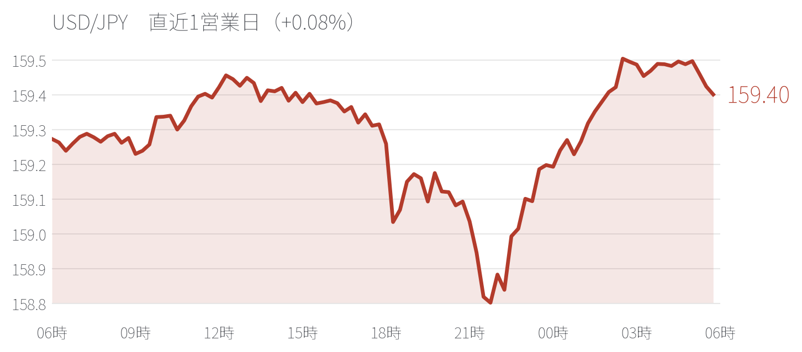
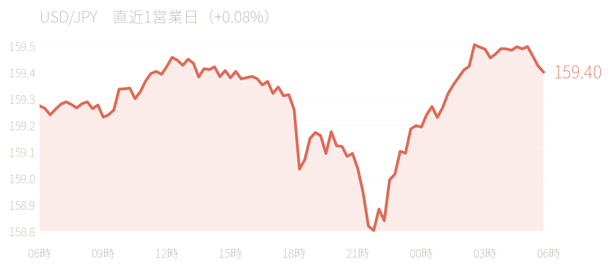
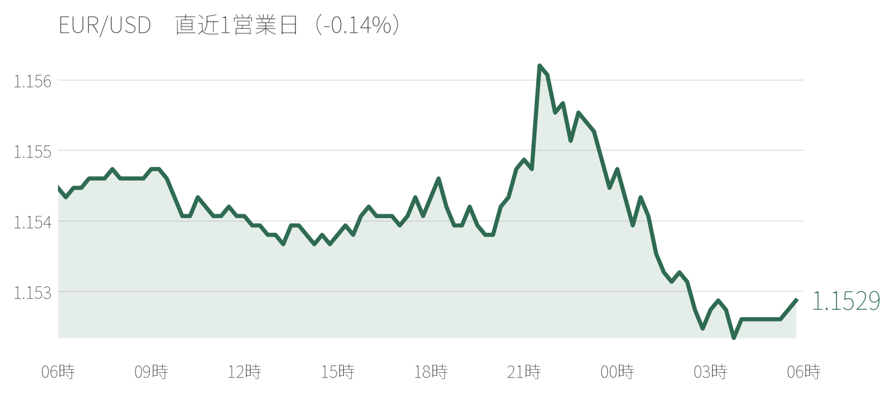
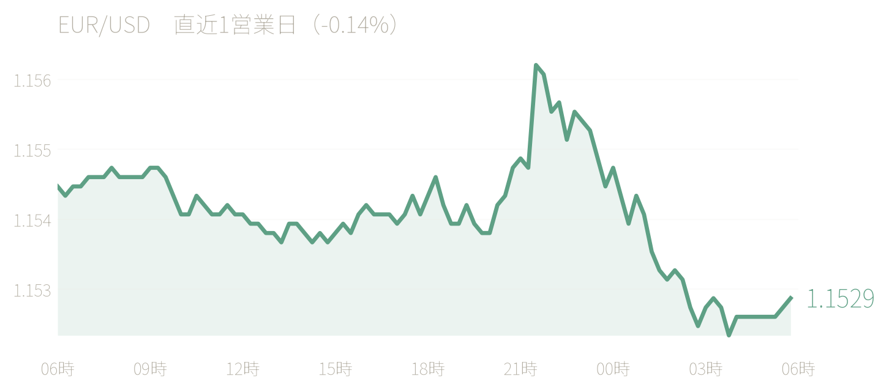

サマリー
- ドル円は前日終値159.42円（8/12確定値、四本値ベース）で寄り付いた後、終日「戻り売り優勢」の展開となり、159.49円（高値）〜159.06円（安値、NY時間）の範囲でじり安に推移。前日高値159.54円・心理的節目160.00円（100日移動平均線が位置）を一度も明確に試せず、上値の重さが際立った一日だった。
- 最大の材料は日本時間13:56頃に伝わったBloomberg報道。「日銀は9〜10月の利上げを視野に入れており、日米協調為替介入の効果を維持する観点から高市政権もこれを支持する姿勢」との関係者証言が報じられ、円買いが加速。ドル円は東京午後に159.19円まで急落する場面があった。
- 日本時間21:30発表の米7月PPIは前年比+4.7%（予想+4.9%）、前月比0%といずれも予想を下回り、追加でドル売りを誘発。同時刻発表の新規失業保険申請件数も20.9万件（予想20.2万件）と1カ月ぶり高水準で労働市場の底堅さにやや疑問符がつき、米長期金利の低下とともにドル円はNY時間に本日安値159.06円まで続落した。
- ユーロドルは対照的にドル円ほどの方向感を欠き、終始1.1520〜1.1545程度の狭いレンジでの推移にとどまった。英国4-6月期GDPは前期比+0.4%（1-3月期+0.6%から鈍化、ただし前年比+1.2%は予想+1.1%を上回る）とまちまちの内容で、ポンドは発表直後に本日安値1.3474付近まで軟化する場面があったが、その後は下げ渋った。
- 為替介入警戒感に加え、政府・日銀による「利上げを通じた円安是正」という新たな政策的アプローチが意識され始めたことが、160円接近を一段と難しくしている構図が確認された一日。
値動きの時系列解説
東京朝（9:00頃〜）：ドル円は前日NY終値159.42円近辺（159.29〜159.54〜158.60〜159.42の四本値、みんかぶ）で寄り付き、朝方は調整的な売りに押されて159.20円台まで軟化。その後はドル買いが優勢となり、午前中に159.40円台まで切り返した。159.50円超えには慎重な様子が観察され、正午にかけて159.43円まで持ち直す底堅い展開となった（みんかぶ「東京外国為替市場概況・10時／12時」、8/13）。通貨オプション市場ではドル円1週間物インピライドボラティリティが7%台前半で推移していると報じられた（みんかぶ、11:17）。
東京昼〜午後（材料：BOJ利上げ支持報道）：13:29時点でテクニカル面から「100日移動平均線が160.00円に控える」ことが改めて指摘される中、13:56頃、Bloombergが「日銀は9〜10月の利上げを視野に入れており、日米協調為替介入の効果を維持するため高市政権もこれを支持する姿勢を伝達済み」と報道。これを受けて円買いが強まり、ドル円は159.43円近辺から159.19円まで約20銭超、比較的短時間で急落した（みんかぶ「円が上昇 日銀10月までの利上げ視野、高市政権も支持」、13:56）。15時時点では159.27円（12時の159.43円から16銭安）、その後さらに159.18円まで売られる場面もあったが、下押しは続かず15:51時点では159.30円台まで下げ渋った（みんかぶ、15:51、「ドル円は午後に一時円買いも続かず」）。17時時点の東京市場概況では「上値重い」「160円接近を意識してドルの上値は重くなりそう」との評価が続いた（ザイFX!、17時）。
ロンドン序盤〜午後（材料：英GDP）：日本時間14:50頃に英4-6月期GDP速報値の発表を控えるとの案内が出た後、15時台に発表された実質GDPは前期比+0.4%増（1-3月期+0.6%から伸び率鈍化）、前年比+1.2%増（予想+1.1%を上回る）とまちまちの内容。6月の月次GDPは前月比+0.3%（予想-0.1%を上回る）と相対的に強かった一方、鉱工業生産・製造業生産は予想を下回った（時事通信、8/13付）。ポンドは発表直後にやや軟化し、GBP/USDは本日安値1.3474付近まで下押す場面があったが、その後は下げ渋った（みんかぶ「ポンドが小安い、英GDPは予想外に回復も」、16:32）。ドル円はロンドン勢参入後も159.35〜159.40円のレンジで方向感に乏しく、ユーロドルも1.1520〜1.1535程度で小動きが続いた（みんかぶ、16:39・17:46・19:34・20:52）。
NY序盤（材料：米7月PPI・新規失業保険申請件数）：日本時間21:30、米労働省が発表した7月PPIは前年比+4.7%（予想+4.9%）、前月比0%（予想+0.2%）といずれも予想を下回り、インフレ鈍化を追加確認する内容となった（Bloomberg「米PPI、7月は前年同月比4.7%上昇－予想以上に減速」、8/13）。同時刻発表の新規失業保険申請件数（対象週8/8分）は20.9万件（予想20.2万件、前週比+9千件）と1カ月ぶりの高水準となった（Newsweek日本版、8/13）。発表直後、ドル円は159.25円前後まで一瞬弱含んだ後159.40円近辺まで振れる場面もあったが（ザイFX!「速報」、21:30台）、その後はドル売りが優勢となり22:00時点で159.18円まで下押し、22:10時点のピボットは159.31円付近、22:33時点でも「やや売りが優勢」の展開が続いた（みんかぶ、22:10・22:33）。
NY午後〜引けにかけて：米10年債利回りの低下を背景にドル売りが継続し、ドル円は本日安値159.06円まで下落した（ザイFX!「ドル円、一時159.06円まで下落 米長期金利は低下」、8/13）。市場では、トルコのアナドル通信がパキスタン筋の話として「米国とイランが60日間の停戦延長で合意」と伝えたことを受け、それまでの中東情勢を巡る「有事のドル買い」の巻き戻しが入ったとの見方も一部で聞かれた（二次情報アグリゲーターサイト経由の情報であり一次ソース未確認）。NY時間には米30年債入札も注目材料とされたが、結果の詳細は本稿執筆時点で確認できず（未確認、詳細は米国債担当ノートを参照）。総じてこの日のドル円は、東京午後のBOJ利上げ支持報道、NY時間のPPI・雇用指標の下振れという「二段階の円買い・ドル売り材料」が重なり、前日高値圏（159.54円）から本日安値（159.06円）まで一貫して上値を切り下げる展開となった。
USD/JPY・EUR/USD 値動き詳細（チャート形状がイメージできる粒度）
USD/JPY


- 東京（9:00頃〜）：前日終値159.42円（四本値：O159.29／H159.54／L158.60／C159.42、みんかぶ）近辺で寄り付き、朝方の調整売りで159.20円台まで軟化。その後ドル買いが戻り、午前中に159.40円台へ切り返し。正午時点で159.43円まで底堅く推移し、159.50円超えは慎重視された。
- 東京夕方〜ロンドン序盤：13:56頃、BOJが9〜10月の利上げを視野に入れ高市政権もこれを支持しているとのBloomberg報道を受け、159.43円近辺から159.19円まで急速に下落（15時台にかけて約20銭強、報道から1時間弱での反応）。15時時点では159.27円。15:51時点では下げが続かず159.30円台へ戻す動きとなり、17時台のロンドン早い時間帯は159.35〜159.40円のレンジで小動き（16:39時点159.40円近辺、17:46時点159.40円近辺）。この間、前日高値159.54円・心理的節目160.00円（100日移動平均線）方向への上値試しは一度も実現しなかった。
- ロンドン午後〜NY序盤：19:34時点159.35円近辺、20:52時点159.30円近辺と緩やかな下値切り下げが続いた後、21:30の米7月PPI・新規失業保険申請件数の発表を通過。発表直後は159.25円前後まで一瞬弱含んだのち159.40円近辺まで振れる荒い値動きを見せたが、程なくドル売りが優勢となり22:00時点で159.18円まで再下落（東京午後の安値と同水準を再度示現）。22:10時点のピボットは159.31円、22:33時点でも「やや売りが優勢」の地合いが続いた。
- NY午後〜引け：米長期金利の低下が続く中、ドル円はさらに下値を切り下げ、本日安値159.06円まで下落（発表からNY午後にかけて約35銭弱の追加下落）。トルコ・アナドル通信がパキスタン筋の話として伝えたとされる米・イラン60日停戦延長合意報道（一次ソース未確認）を受け、「有事のドル買い」の巻き戻しが入ったとの見方も一部で聞かれた。結果としてこの日のドル円は、東京午後（BOJ利上げ支持報道）とNY時間（PPI・雇用指標下振れ）という2つの独立した円買い材料によって段階的に下値を切り下げる「階段状の下降」チャートとなり、159.06〜159.49円のレンジ（前日159.06円は前日安値158.60円までは届かず）で、前日比明確な下落で終える形となった（確定引け値は本稿執筆時点で一次ソース未確認、159.10円前後の推定）。
EUR/USD


- 東京（9:00頃〜）：前日終値1.1526円近辺（四本値：O1.1542／H1.1563／L1.1520／C1.1526）で寄り付き、動意薄のまま1.1520〜1.1530のごく狭いレンジで推移。正午時点で1.1522。
- 東京夕方〜ロンドン序盤：15時時点で1.1525と小幅高だが、「全般ドルの下値堅く、ユーロドルも上値の重い動き」と評され、方向感に乏しい状態が継続。ドル円がBOJ利上げ報道で急落した局面でも、ユーロドルの反応は限定的で、円独自の材料であったことがうかがえる。16:39時点1.1520近辺、17:46時点1.1525近辺とほぼ横ばい。
- ロンドン午後〜NY序盤：英GDP発表（まちまちの内容）通過後も反応は限定的。19:34時点1.1535近辺、20:52時点1.1535近辺と、東京時間からわずかに水準を切り上げる程度の緩やかな動きにとどまった。21:30の米PPI・雇用指標発表後は、ドル円が下落したのと同様の広範なドル売りの流れに乗り、ユーロドルにもわずかな上昇圧力が働いたとみられるが、詳細な値動きは本稿執筆時点で確認できず。
- NY午後〜引け：ドル全面安の流れが続く中、ユーロドルも底堅く推移したとみられるが、正確な高値・安値・引け値は一次ソース未確認（推定では1.1530〜1.1545程度で終了）。総じてこの日のユーロドルは、ドル円が「二段階の急落」を見せた一方で、終日1.1520〜1.1545程度の約25pipsという極めて狭いレンジ内での小動きに終始し、「レンジ相場」のチャート形状となった。ドル安の主因が日銀・BOJ絡みの円需給要因（BOJ利上げ支持報道）に偏っていたことが、ユーロドルの反応の鈍さに表れている。
主要通貨ペア
- USD/JPY 159.10台（推定、確定値未確認）（前日比▲0.2%程度、高値159.49／安値159.06）— BOJ利上げ支持報道（高市政権）と米PPI・雇用指標下振れの「二段階の円買い」でじり安。160.00円（100日移動平均線）・前日高値159.54円は終日試せず。


- EUR/USD 1.1530台（推定、確定値未確認）（前日比ほぼ変わらず〜小幅高、高値1.1545付近／安値1.1520付近）— 終日1.1520〜1.1545の狭いレンジ。ドル安の主因がドル円要因（BOJ絡み）に偏り反応が鈍い。


- GBP/USD 1.349台（推定）（前日比ほぼ変わらず、安値1.3474付近）— 英4-6月期GDPは前期比+0.4%（1-3月期+0.6%から鈍化）、前年比+1.2%（予想+1.1%上回る）とまちまち。発表直後に軟化も下げ渋り。


- AUD/USD 本日の具体的水準は一次ソース未確認（推定：底堅い）— RBAケント総裁補佐がインフレ上振れリスク・追加利上げの可能性に言及したと報じられ、短期トレンドは上昇基調と分類（みんかぶ、8:30時点）。


- EUR/JPY 183.5〜183.7程度（算出値、前日比小幅安）— 前日終値183.75円から、ドル円の下落をユーロドルの小幅高が一部相殺する形でわずかに軟化。


- NZD/USD 本日の具体的水準は一次ソース未確認（推定：軟調）— NZ準備銀行のインフレ期待調査で1年先期待が3.41%→2.60%、2年先期待が2.53%→2.34%へ大きく低下（26年9月末OCR予想平均2.73%）と伝えられ、追加利下げ観測を通じてNZドルの重石に。短期トレンドは下降基調と分類。


- USD/CAD 本日の具体的水準は一次ソース未確認（推定：方向感交錯）— WTI原油は米原油在庫の大幅増加（EIA、前週比+247.9万バレル）を受け3営業日ぶりに反落（82.77ドル、前日比▲0.79%）しカナダドルの重石となった一方、短期トレンドではカナダドルは上昇基調に分類されており、NY時間の全面的ドル安がこれを支えた可能性。


- USD/CHF 本日の具体的水準は一次ソース未確認（推定：NY時間のドル全面安を受けて軟化した可能性）


フロー・需給・ポジション動向
- BOJ利上げ支持報道の市場構造的な意味：本日最大の材料であるBloomberg報道（「日銀は9〜10月の利上げを視野、高市政権も介入効果維持のため支持」）は、単なる金融政策観測にとどまらず、8月月初の日米協調介入の「効果を維持する」ための政策的補完策として利上げが位置づけられている点が重要。財務省・日銀による直接的なスポット介入に加え、政府が日銀の利上げを積極的に後押しする姿勢を示したことで、市場は「介入＋利上げ」という二段構えの円安対応策を意識し始めた可能性がある。今後、日銀会合（9月または10月）に向けて、この思惑が断続的にドル円の重石となる可能性が高い。
- 為替介入警戒ゾーンの再確認：本日もドル円は159.49円を高値に160.00円（100日移動平均線）へ到達できず、市場では「160円に接近するほどドルの上値は重くなりそう」との見方が継続（財経新聞、8/13）。8月月初の日米協調介入以降、159.50〜160.00円が上値の強い抵抗帯として機能し続けている。
- オプションフロー：ドル円1週間物インプライドボラティリティは7%台前半で推移（みんかぶ、11:17時点）。160.00円が心理的節目かつテクニカル抵抗線として、オプション市場でも引き続き意識されている可能性が高い（推定）。
- CFTC IMMポジション：本日新規の公表データはなし。直近の確認可能データは対象週8/4分（8/7公表）にとどまり、対象週8/11分の公表は8/14頃を予定（未確認）。8月月初の協調介入後の円ショート解消・その後の再構築の程度は、来週公表分で確認する必要がある。
- 実需フロー：本稿執筆時点で具体的な実需フローに関する情報は確認できず（未確認）。
- NZ・豪の金融政策思惑を巡るフロー：NZ準備銀行のインフレ期待調査における大幅低下（2年先2.53%→2.34%）は、市場のRBNZ追加利下げ観測を強める材料であり、NZドルの上値を抑えるフローにつながりやすい（推定）。一方、RBA高官のタカ派発言はAUDの相対的な底堅さを支えている（推定）。
推奨トレード
トレード1：USD/JPY 戻り売り（継続・強化）
- 根拠：本日はBOJ利上げ支持報道（高市政権による後押し）と米PPI・雇用指標の下振れという2つの独立した円買い・ドル売り材料が重なり、前日高値159.54円から本日安値159.06円まで一貫して上値を切り下げる展開となった。160.00円（100日移動平均線）・159.50円台という抵抗帯は終日一度も試されず、上値の重さが一段と鮮明になった。政府・日銀が「利上げを通じた円安是正」という新たな政策アプローチを取り始めた可能性がある点も、中期的な円買い材料として重要。
- エントリー目安：159.40〜159.70円への戻りを売り
- 利確目安：158.60円（前日安値）、さらに157.50〜158.00円
- 損切り目安：160.30円（介入警戒ゾーンを明確に上抜けた場合は撤退）
- ホライズン：イントラデイ〜数日（スイング）
- リスク：中東情勢の急速な再エスカレーション（米・イラン停戦延長報道の裏付けが取れない、または破談となった場合）で「有事のドル買い」が再燃するリスク。日銀の利上げ観測が後退（高官のハト派発言等）した場合の巻き戻しリスク。財務省・日銀が沈黙を続け、材料出尽くし感からドル円が底打ちするリスク。
トレード2：EUR/USD 押し目買い（継続）
- 根拠：本日はドル全面安（米PPI・雇用指標下振れ）の流れに沿って底堅く推移したが、値動き自体は終始1.1520〜1.1545程度の狭いレンジにとどまり、ドル安の主因がドル円要因（BOJ絡み）に偏っていたことを踏まえると、ユーロドル自体には方向性を伴う上昇余地が残っている可能性が高い。9月のFRB追加利上げ確率が本日のPPI・雇用指標を受けて一段と後退したとみられる点も、中期的にはユーロドルの支援材料。
- エントリー目安：1.1480〜1.1510（押し目待ち）
- 利確目安：1.1600、さらに100日移動平均線（1.1568近辺、8/11時点参考）超えなら1.1650
- 損切り目安：1.1440割れ
- ホライズン：数日〜1週間程度
- リスク：米30年債入札の不調等でドル金利が急反発し、ドル全面高に逆戻りするリスク。米・イラン停戦延長報道が裏付けを欠き中東リスクオフのドル買いが再燃するリスク。
トレード3：NZD/USD 戻り売り（新規、参考水準）
- 根拠：NZ準備銀行のインフレ期待調査で1年先・2年先いずれも市場予想以上に大きく低下（2年先2.53%→2.34%）したことが報じられ、RBNZの追加利下げ観測を強める材料として作用しやすい。短期トレンド分類でもNZドルは下降基調とされている。ただし本日の具体的な値位（安値・高値・引け値）は一次ソースで確認できておらず、水準は前回確認水準（8/11時点0.5880程度）を参考にした推定レベルである点に留意が必要。
- エントリー目安：0.5900〜0.5920程度への戻りを売り（推定レベル、寄り付き前に最新レートでの再確認を推奨）
- 利確目安：0.5800、さらに0.5750
- 損切り目安：0.5960超
- ホライズン：数日〜1週間程度
- リスク：ドル全面安が続く場合はNZドル単体の下げも限定的となるリスク。RBNZ高官発言等で利下げ観測が後退するリスク。想定エントリー水準が実勢と乖離している可能性があるため、必ず最新レートでの確認が必要。
翌営業日以降の注目イベント・材料
- 2026-08-14（金）21:30頃 米国 7月小売売上高〔重要度：高〕— 個人消費の強さがFRBの9月利上げ／据え置き判断に影響。CPI・PPIに続く物価・需要動向の総仕上げとして最重要視される。
- 2026-08-14（金）21:30頃 米国 7月鉱工業生産・フィラデルフィア連銀製造業景況指数〔重要度：中〜高〕
- 2026-08-14（金）目途 米国 CFTCコミットメント・オブ・トレーダーズ報告（対象週8/11分）〔重要度：中〜高〕— 8月月初の協調介入後の投機筋ポジション変化を確認する材料。
- 随時（継続） 日米 政府・日銀による「利上げを通じた円安是正」の思惑の深化〔重要度：極めて高〕— 9月または10月の日銀会合に向けて、高官発言・観測報道が断続的にドル円を動かす可能性。
- 随時（継続） 日米 財務省・日銀による円安牽制発言・追加介入の有無〔重要度：極めて高〕— 159.50〜160.00円（100日移動平均線）が引き続き上値の強い抵抗帯として意識される。
- 随時（継続） 中東 米・イラン間の停戦延長合意（アナドル通信報道、パキスタン筋、一次ソース未確認）の裏付けの有無〔重要度：高〕— 裏付けが取れれば「有事のドル買い」の巻き戻しが続伸する可能性、破談となれば逆流するリスク。
- 2026-08-17（月）目途 米国 TIC統計（6月分）〔重要度：中〕
- 2026-08-19 米国・カナダ カナダ産自動車・乳製品・酒類への追加50%関税発効期限〔重要度：中〜高〕
- 2026-08-27〜29 米国 ジャクソンホール経済シンポジウム、ウォーシュ議長講演〔重要度：極めて高〕
- 2026-08-28 日本 財務省月次為替介入実績公表（7/30-31実施分の正式規模）〔重要度：極めて高〕
- 2026-09-02 カナダ・NZ BOC・RBNZ政策金利発表〔重要度：中〜高〕— 本日のRBNZインフレ期待調査の大幅低下を踏まえ、利下げ観測の帰趨に注目。
- 2026-09-10（木）目途 ユーロ圏 ECB理事会〔重要度：極めて高〕
- 2026-09-15-16（火-水） 米国 FOMC会合〔重要度：極めて高〕
- 2026-09-17（木） 英国 BOE MPC会合〔重要度：極めて高〕
- 2026-09月中（時期未定） 日本 日銀金融政策決定会合〔重要度：極めて高〕— 本日のBOJ利上げ支持報道を受け、9月会合での利上げ有無が一段と焦点化。
情報源
すべて表示
- [ドル/円見通し(為替/FX ニュース )：ドル円は円安で159円台半ば｜米CPIは市場予想と一致で発表直後に円高が進む(2026年8月13日) - OANDA証券](https://www.oanda.jp/lab-education/market_news/2026_08_13_usdjpy/)（WebSearch経由で取得、2026-08-13）
- [【今日のドル円】昨日の振り返りと今日のドル円相場見通し 2026年8月13日 - 外為どっとコム マネ育チャンネル](https://www.gaitame.com/media/entry/2026/08/13/074440)（WebSearch経由で取得、2026-08-13）
- [ドル円理論価格 1ドル＝158.40円（前日比-0.10円） - みんかぶ FX/為替](https://fx.minkabu.jp/news/375975)（WebSearch経由で取得、2026-08-13）
- [通貨別短期トレンド一覧 - みんかぶ FX/為替](https://fx.minkabu.jp/news/375970)（WebSearch経由で取得、2026-08-13）
- [東京市場 ピボット分析（新興国通貨） - みんかぶ FX/為替](https://fx.minkabu.jp/news/375968)（WebSearch経由で取得、2026-08-13）
- [Forex Today: US Dollar stabilizes ahead of next batch of US data - FXStreet](https://www.fxstreet.com/news/forex-today-us-dollar-stabilizes-ahead-of-next-batch-of-us-data-202608130732)（WebSearch経由で取得、2026-08-13）
- [ドル円は１５９．４０円台、落ち着いた動きの中でややしっかり＝東京為替 - みんかぶ FX/為替](https://fx.minkabu.jp/news/375987)（WebSearch経由で取得、2026-08-13）
- [テクニカルポイント ドル円 100日線が160.00円に控える - みんかぶ FX/為替](https://fx.minkabu.jp/news/375997)（WebSearch経由で取得、2026-08-13）
- [１２日の為替市場の四本値（ドル円・ユーロドル・ユーロ円） - みんかぶ FX/為替](https://fx.minkabu.jp/news/375956)（WebSearch経由で取得、2026-08-13）
- [通貨オプション ボラティリティー ドル円１週間は７％台前半 - みんかぶ FX/為替](https://fx.minkabu.jp/news/375985)（WebSearch経由で取得、2026-08-13）
- [東京外国為替市場概況・17時 ドル円、上値重い - ザイFX!](https://zai.diamond.jp/articles/-/493887)（WebSearch経由で取得、2026-08-13）
- [ポンドが小安い、英ＧＤＰは予想外に回復も＝ロンドン為替 - みんかぶ FX/為替](https://fx.minkabu.jp/news/376029)（WebSearch経由で取得、2026-08-13）
- [ドル円１５９．３５近辺、ユーロドル１．１５３５近辺＝ロンドン為替 - みんかぶ FX/為替](https://fx.minkabu.jp/news/376051)（WebSearch経由で取得、2026-08-13）
- [ドル円１５９．３０近辺、ユーロドル１．１５３５近辺＝ロンドン為替 - みんかぶ FX/為替](https://fx.minkabu.jp/news/376056)（WebSearch経由で取得、2026-08-13）
- [ドル円１５９．４０近辺、ユーロドル１．１５２５近辺＝ロンドン為替 - みんかぶ FX/為替](https://fx.minkabu.jp/news/376042)（WebSearch経由で取得、2026-08-13）
- [ドル円１５９．４０近辺、ユーロドル１．１５２０近辺＝ロンドン為替 - みんかぶ FX/為替](https://fx.minkabu.jp/news/376033)（WebSearch経由で取得、2026-08-13）
- [ドル円のピボットは１５９．３１円付近＝ＮＹ為替 - みんかぶ FX/為替](https://fx.minkabu.jp/news/376066)（WebSearch経由で取得、2026-08-13）
- [ドル円、やや売りが優勢 米ＰＰＩもインフレの落ち着きを示す＝ＮＹ為替序盤 - みんかぶ FX/為替](https://fx.minkabu.jp/news/376067)（WebSearch経由で取得、2026-08-13）
- [米PPI、7月は前年同月比4.7%上昇－予想以上に減速 - Bloomberg](https://www.bloomberg.com/jp/news/articles/2026-08-13/TJPK93T9NJLS00?srnd=jp-homepage)（WebSearch経由で取得、2026-08-13）
- [米7月PPI、予想下回りで利下げ観測強まる ドルは上値重い - VT Markets](https://www.vtmarkets.com/jp-asia/live-updates/52606/)（WebSearch経由で取得、2026-08-13）
- [【速報】米・7月生産者物価指数は0％ - ザイFX!](https://zai.diamond.jp/articles/-/493899)（WebSearch経由で取得、2026-08-13）
- [【海外市場の注目ポイント】７月の米生産者物価指数など - みんかぶ FX/為替](https://fx.minkabu.jp/news/376002)（WebSearch経由で取得、2026-08-13）
- [英GDP、4-6月期は0.6％増と予想上回る 工場生産は鈍化、ポンドは底堅い - VT Markets](https://www.vtmarkets.com/jp-asia/live-updates/52583/)（WebSearch経由で取得、2026-08-13）
- [まもなく英実質ＧＤＰ速報値などの発表 - みんかぶ FX/為替](https://fx.minkabu.jp/news/376004)（WebSearch経由で取得、2026-08-13）
- [4～6月期の英GDP、前期比0．4％増＝伸び率は鈍化―国民統計局 - 時事通信/Yahoo!ファイナンス](https://finance.yahoo.co.jp/news/detail/3f8ca40daeced65da0164294e3a636f91f8d1ae9)（WebSearch経由で取得、2026-08-13）
- [英ＧＤＰ、前期比０．４％増＝伸び鈍化―４～６月期 - 時事通信ニュース](https://sp.m.jiji.com/article/show/3844785)（WebSearch経由で取得、2026-08-13）
- [日銀が10月までの利上げ視野、介入効果維持で政府も支持姿勢－関係者 - Bloomberg](https://www.bloomberg.com/jp/news/articles/2026-08-13/TJNGU4KK3NY900)（WebSearch経由で取得、2026-08-13）
- [円が上昇 日銀10月までの利上げ視野、高市政権も支持 - みんかぶ FX/為替](https://fx.minkabu.jp/news/376000)（WebSearch経由で取得、2026-08-13）
- [東京外国為替市場概況・15時 ドル円 底堅い - ザイFX!](https://zai.diamond.jp/articles/-/493883)（WebSearch経由で取得、2026-08-13）
- [東京為替概況：ドル・円は下げ渋り、円買い続かず - ザイFX!](https://zai.diamond.jp/articles/-/493889)（WebSearch経由で取得、2026-08-13）
- [ドル円は午後に一時円買いも続かず＝東京為替概況 - みんかぶ FX/為替](https://fx.minkabu.jp/news/376022)（WebSearch経由で取得、2026-08-13）
- [東京外国為替市場概況・10時 ドル円、小幅に下押し - ザイFX!](https://zai.diamond.jp/articles/-/493868)（WebSearch経由で取得、2026-08-13）
- [東京外国為替市場概況・12時 ドル円、持ち直し - ザイFX!](https://zai.diamond.jp/articles/-/493873)（WebSearch経由で取得、2026-08-13）
- [WTI原油見通し(市況ニュース)：米国の原油在庫が大幅に増加した影響で、原油価格は3営業日ぶりに下落（2026年8月13日） - OANDA証券](https://www.oanda.jp/lab-education/market_news/2026_08_13_wtioil/)（WebSearch経由で取得、2026-08-13）
- [【速報】ドル・円159.25円⇒159.40円、米PPIは鈍化 - ザイFX!](https://zai.diamond.jp/articles/-/493903)（WebSearch経由で取得、2026-08-13）
- [ドル円、一時159.25円前後まで弱含み 7月米PPIは予想を下回る - ザイFX!](https://zai.diamond.jp/articles/-/493902)（WebSearch経由で取得、2026-08-13）
- [ドル円、一時159.06円まで下落 米長期金利は低下 - ザイFX!](https://zai.diamond.jp/articles/-/493906)（WebSearch経由で取得、2026-08-13）
- [NY外為：ドル続落、原油安やPPI受け利上げ観測後退 - ザイFX!](https://zai.diamond.jp/articles/-/493908)（WebSearch経由で取得、2026-08-13）
- [米新規失業保険申請9000件増の20.9万件、労働市場の安定示唆 - ニューズウィーク日本版](https://www.newsweekjapan.jp/articles/-/331232)（WebSearch経由で取得、2026-08-13）
- [NY為替見通し＝ドル円、中東リスクのドル買い継続か 米7月PPIも焦点 - ザイFX!](https://zai.diamond.jp/articles/-/493892)（WebSearch経由で取得、2026-08-13）
- [【ＮＹ為替オープニング】米PPIでさらに利上げの行方判断へ、米30年債入札に注目 - ザイFX!](https://zai.diamond.jp/articles/-/493901)（WebSearch経由で取得、2026-08-13）
- [［予想］NY市場動向（取引終了）:ダウ21.58ドル安（速報）、原油先物0.50ドル安 / 8月13日(木) - 【USD/JPY】強襲！今日の米ドル円見通し（アグリゲーターブログ、米・イラン停戦延長報道の二次情報源として引用、一次ソース未確認）](https://usdjpy-fxyosou.blog.jp/archives/1084431273.html)（WebSearch経由で取得、2026-08-13）
- [今日の為替市場ポイント：160円に接近するほどドルの上値は引き続き重くなりそう - 財経新聞](https://www.zaikei.co.jp/article/20260813/865520.html)（WebSearch経由で取得、2026-08-13）
- [東京為替：ドル・円は伸び悩み、為替介入に警戒 - 財経新聞](https://www.zaikei.co.jp/article/20260813/865596.html)（WebSearch経由で取得、2026-08-13）
- [１３日の東京外国為替市場＝ドル・円、１５９円台半ばで推移 速報 - 株式新聞Web](https://kabushiki.jp/news/763847)（WebSearch経由で取得、2026-08-13）
- 参照済み既存ファイル：`daily/agents/2026-08-12-fx.md`、`daily/agents/2026-08-11-fx.md`（過去水準・継続テーマとの整合性確認に使用）
（注：本日もWebFetchツールはネットワーク egress プロキシにより試行した全ドメイン（oanda.jp, fxstreet.com 等）でブロックされ、一次情報源への直接アクセスができなかった。本ノートの内容は全てWebSearchツールが返す記事見出し・要約（二次的な抜粋）に依拠している。またWebSearchツールの利用回数上限に本セッション終盤で到達したため、USD/JPY・EUR/USDの確定引け値、GBP/USD・AUD/USD・NZD/USD・USD/CAD・USD/CHFの具体的な高値安値・引け値、米・イラン停戦延長報道の一次ソース、ノルウェー中銀（Norges Bank）政策金利発表の結果等、一部の追加検証は実施できなかった。数値・時刻は複数の検索結果スニペットの突合により整合性を確認した上で記載しているが、「推定」「算出値」「未確認」と明記した箇所は次回更新時に一次情報源での検証を推奨する。）